Mechanical Engineer | UAV Design | Robotics | CAD | Prototyping
Download CVI am a Mechanical Engineer with a passion for UAV design, robotics, CAD modeling, prototyping, and simulation. My work combines mechanical design, hands-on fabrication, electronics, and multidisciplinary engineering problem-solving.
Bachelor of Engineering in Mechanical Engineering
2022 - 2026
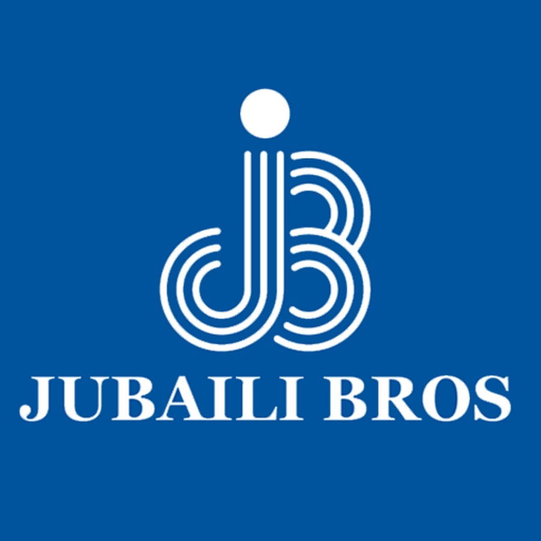
Gained hands-on exposure to generator components, wiring schemes, electrical layouts, control panels, power generators, chassis design, and fabrication processes.
During my internship at Jubaili Bros, I was exposed to the assembly processes behind industrial power generators. I observed and assisted with generator components, chassis fabrication, electrical wiring, and control panel layouts.
Some generators were as big as entire rooms. The 500 kVA generator shown below is small compared to the bigger models offered.
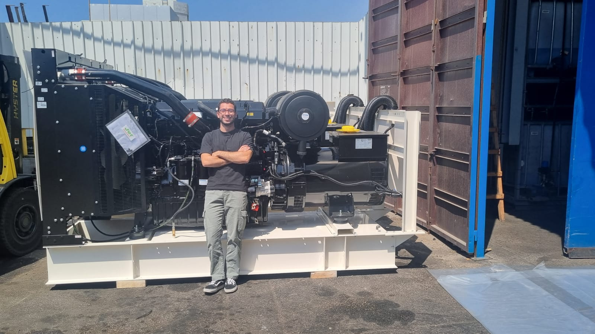
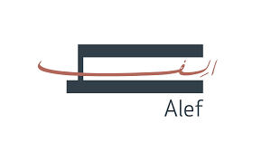
Reviewed HVAC, drainage, fire protection, natural gas, and water layouts for residential projects. Worked on HVAC drawings using AutoCAD and visited construction sites to observe MEP installation inspections.
This internship strengthened my understanding of building services and MEP coordination. I reviewed technical drawings, learned how different mechanical systems are integrated in residential developments, and gained exposure to site execution and inspection procedures.
The experience helped me connect classroom knowledge in HVAC, fluid systems, and mechanical design with real construction practices. I got the chance to visit many construction sites and see key systems in detail including fire protection, AC systems, and water management.
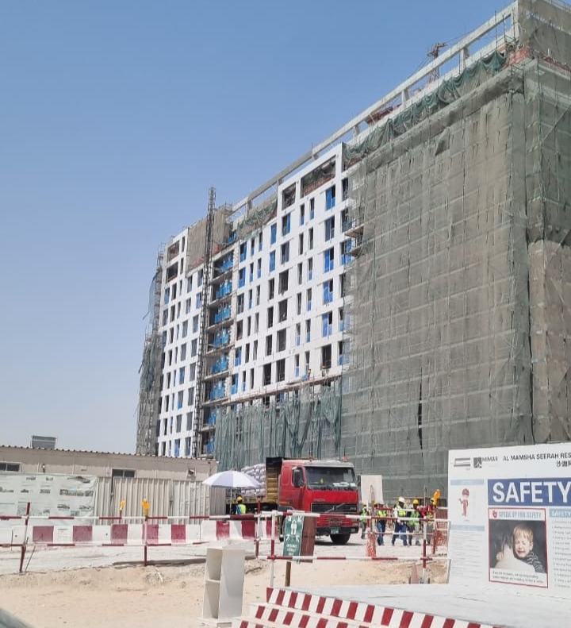
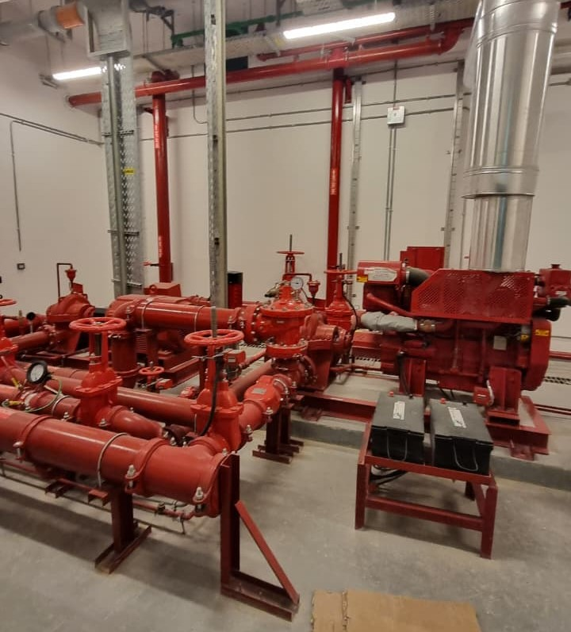
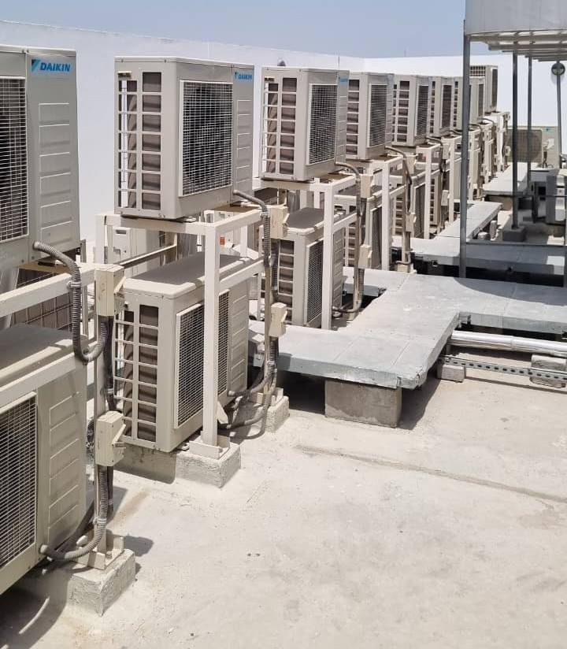
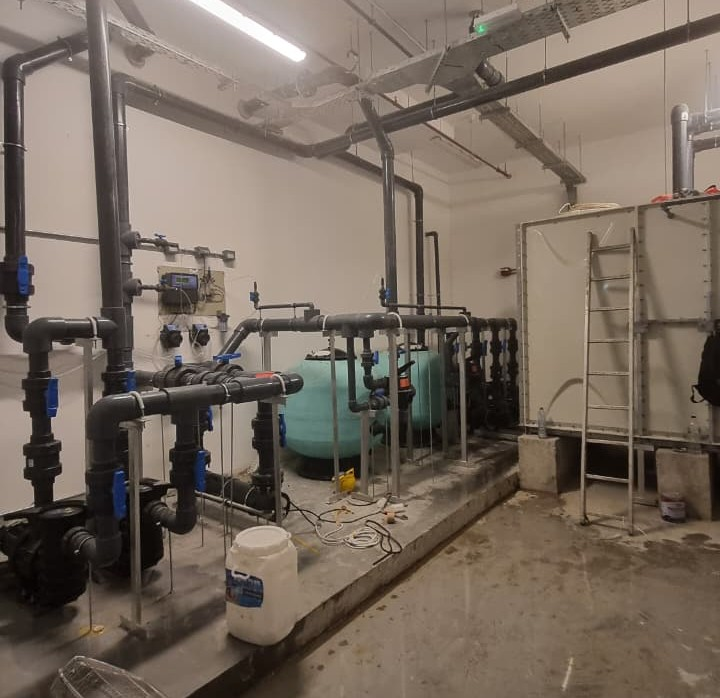
I was also allowed to attend meetings with partner consultants to gain insight into the decision-making process behind the scenes. The engineering team at Alef made this experience very enriching, and I am grateful for the opportunity to learn from them.
Designed a custom UAV with a carbon fiber frame and 3D printed PETG arm mounts, focusing on strength, weight reduction, CAD modeling, wiring, and prototype development.
My final year project involved designing and building a tri-copter UAV with omnidirectional maneuvering capabilities. My work focused on creating a lightweight yet strong frame to support the unique 3-rotor configuration and supporting the hardware layout and wiring schematics.
The frame is T-shaped, with the main lifting force generated by the two front coaxial motor assemblies mounted on the crossbar arms. The tail rotor provides balance and additional control authority during flight. The drone is designed to carry non-destructive testing sensors that can make physical contact with surfaces at different angles, so the design prioritizes maneuverability, stability, and contact-force control rather than speed. The design is inspired by the Voliro T drone, which is shown in the image below.
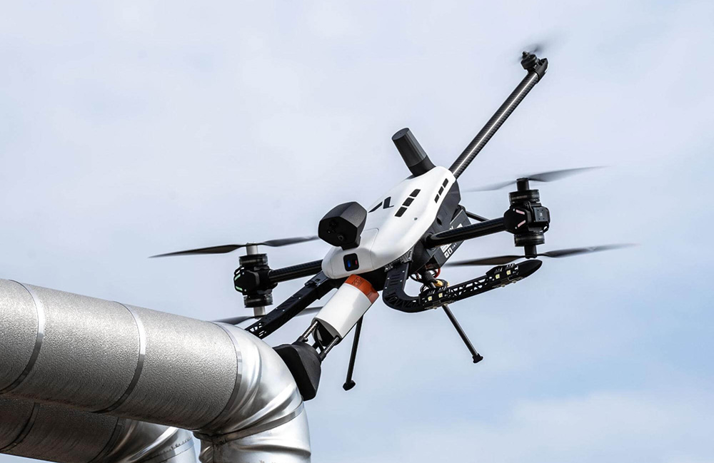
The project required the UAV to have at least a 2:1 thrust-to-weight ratio to ensure it could perform under diverse flight conditions. I achieved this by selecting the main lifting motors to be high-performance MN4014 Multirotor Fixed-Wing UAV KV400 motors paired with 17x5.8 Carbon Fiber Propellers . The total maximum thrust output is 10.752 kgf. This is obtained by multiplying the maximum thrust of each motor/propeller combo, 3.36 kgf, by the thrust output factor of coaxial motors, 1.6x instead of 2x, and then multiplying by the number of coaxial setups, which is 2.
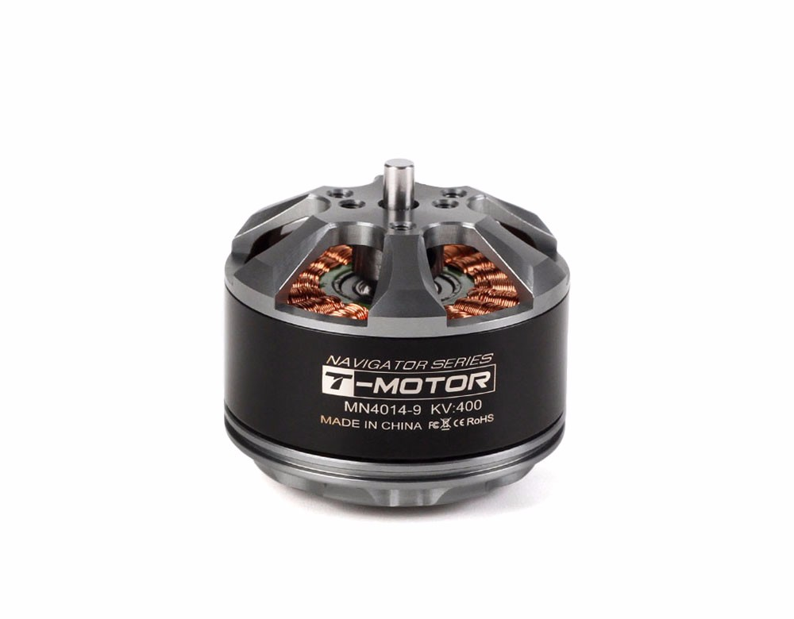
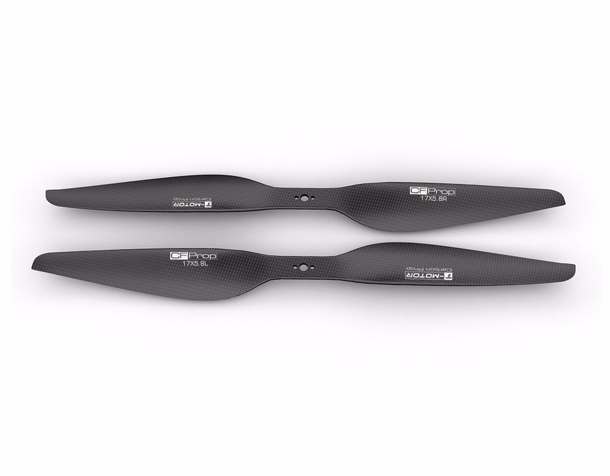
40A ESCs by T-Motor were used to control the main motors.
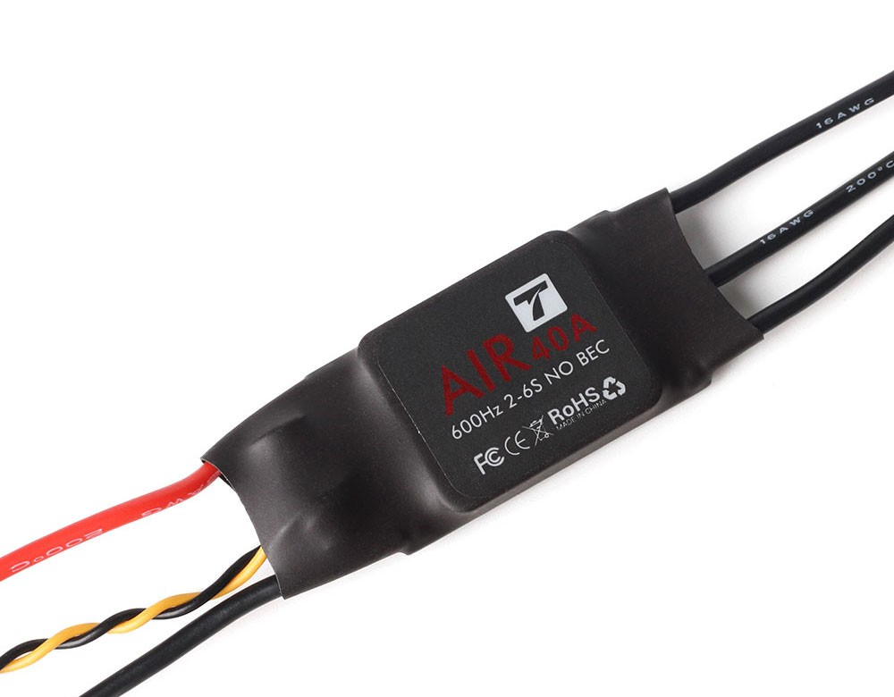
This meant the complete UAV takeoff mass had to remain below 5.376 kg to satisfy the 2:1 thrust-to-weight ratio requirement.
The frame consisted of two main carbon fiber arm plates connected by 3D printed PETG arm mounts. This architecture allows the frame footprint to be reduced, saves weight, and lowers the moment of inertia to improve maneuverability. Each layer has a unique purpose and holds different component categories.
Carbon fiber provides a strong and lightweight structure, while the 3D printed mounts provide a cost-effective way to create the complex geometries needed while retaining strength. The arms are made out of carbon fiber as well. They house the tilt mechanism at their ends and are designed to withstand the forces generated by the motors while maintaining a low weight.
The final design is shown in the image below.
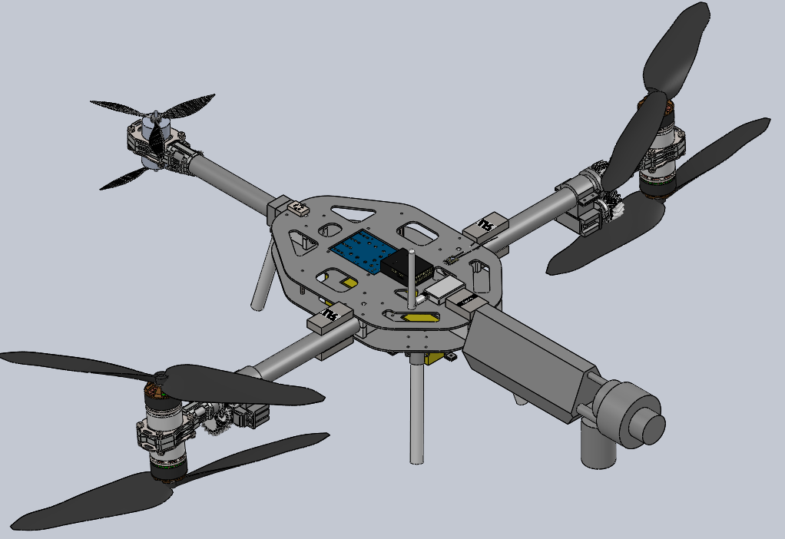
To validate the structure, I performed FEA simulations in SolidWorks to ensure the frame could withstand the forces generated during flight. Following ASTM F2910-22 and FAA Part 107 standards, I applied 9G loading on the frame and obtained stress and deformation results that were well below failure limits. This helped confirm that the design is structurally sound and suitable for demanding flight conditions.
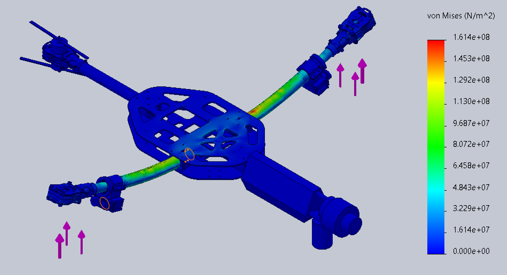
Simulated smooth humanlike trajectories for a 6-DOF robotic arm using ROS2, Python, Gazebo, and minimum-jerk trajectory optimization.
Advised by Dr. Daniel Amar, I worked on the literature review for a PhD thesis on human-robot interaction. People are generally more comfortable working with robots that move in a smooth and humanlike way, so the goal of the research was to develop a method for generating smooth, humanlike trajectories for a 6-DOF robotic arm's end effector.
The robot used in this project was the Dobot CR10A.
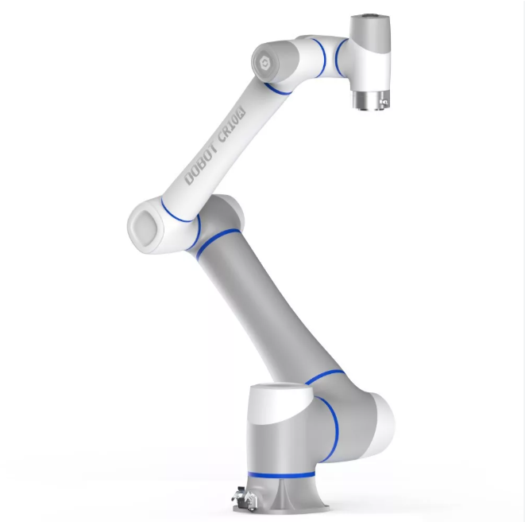
I reviewed literature on trajectory generation and optimization, especially the two-thirds power law, which describes the relationship between speed and curvature in human arm movements. I also reviewed minimum-jerk trajectory optimization, a common approach for generating smooth trajectories that minimize sudden changes in acceleration, known as jerk. One of the key papers about this topic was Flash and Hogan's "The Coordination of Arm Movements: An Experimentally Confirmed Mathematical Model" published in 1985.
I then used Python, with AI assistance, to implement the formulas from the two-thirds power law and generate trajectories that satisfy the minimum-jerk optimization criteria while maintaining continuity between waypoints. I integrated these trajectories into a ROS2 and Gazebo simulation.
The result was a smooth movement of the robotic arm with reduced jerk along the path. Smooth motion can reduce energy expenditure and mechanical stress. It is similar to driving a manual car, where smooth gear changes avoid jerky movements, reduce strain, and improve efficiency. The same principle applies to robotic arms: smoother trajectories can lead to more efficient and natural movements.
The final successful simulation of the robotic arm following the optimized trajectory is shown in the video below.
Developed control logic for the scooping phase of an autonomous firefighting aircraft concept based on the CL-415.
Worked on improving the locomotion capabilities of the Unitree Go1 robot dog in unstructured environments.
Designed and built a stationary pedaling machine that generates electrical power and stores it in a battery.
Email: hijazimustafa971@gmail.com
LinkedIn: Mustafa Hijazi
GitHub: github.com/MustafaHijazi471